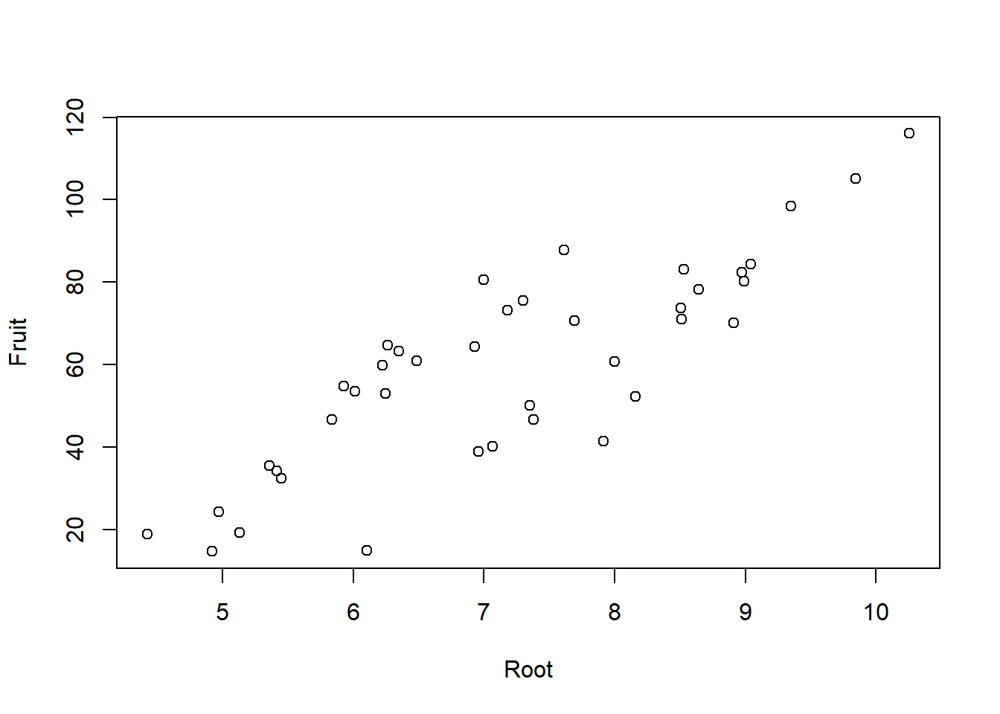
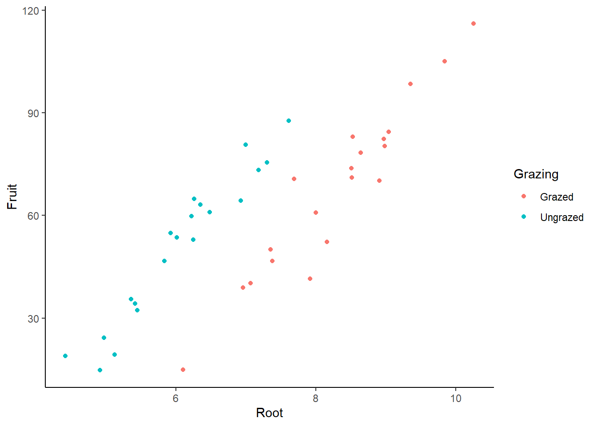
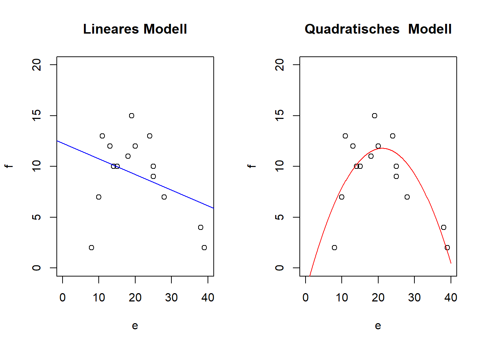
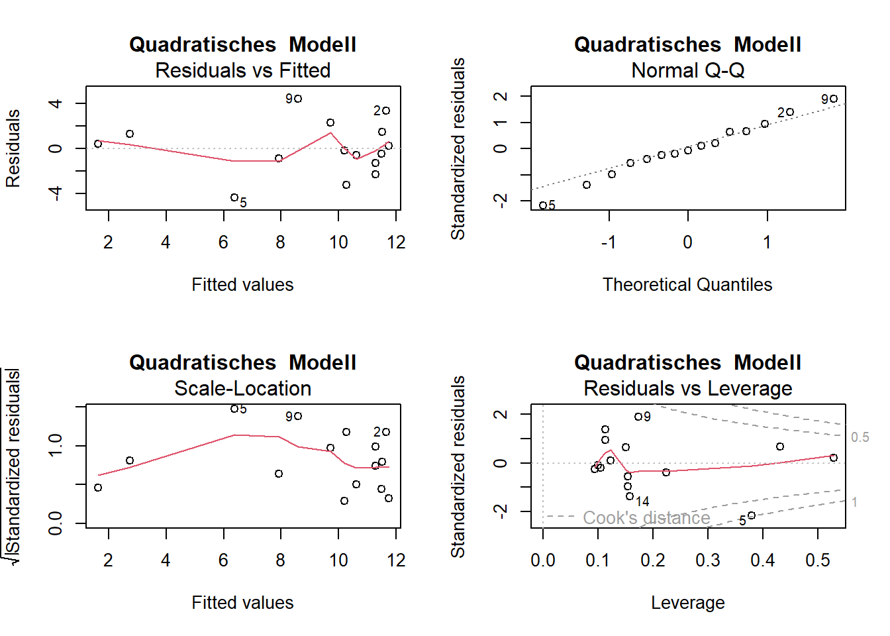
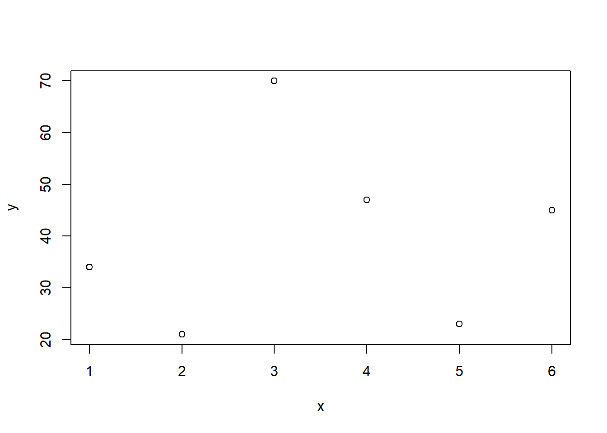
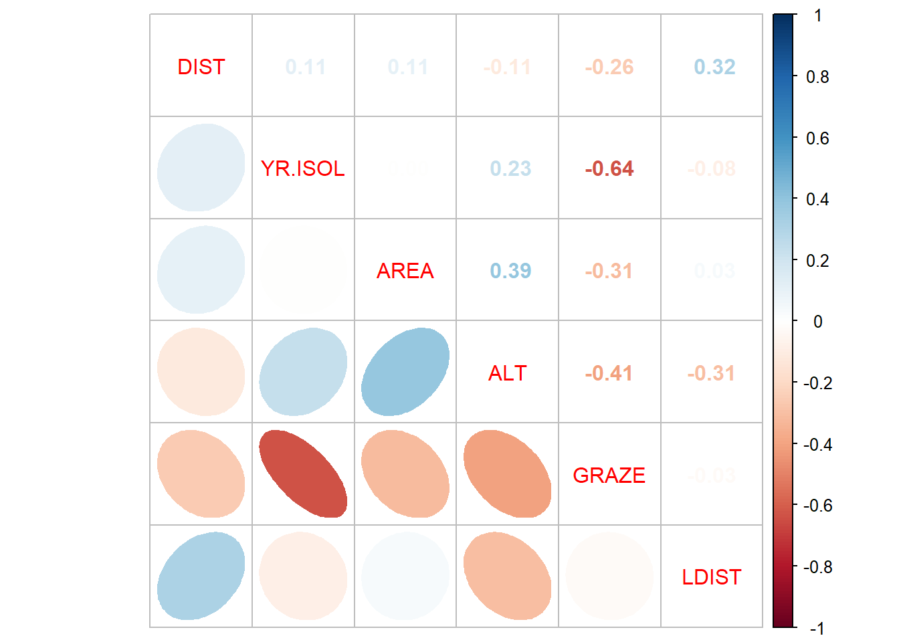

Experiment zur Fruchtproduktion (“Fruit”) von Ipomopsis sp. (“Fruit”) in Abhängigkeit von der Beweidung (“Grazing” mit 2 Levels: “Grazed”, “Ungrazed”) und korrigiert für die Pflanzengrösse vor der Beweidung (hier ausgedrückt als Durchmesser an der Spitze des Wurzelstock: “Root”)
X Root Fruit Grazing
Min. : 1.00 Min. : 4.426 Min. : 14.73 Grazed :20
1st Qu.:10.75 1st Qu.: 6.083 1st Qu.: 41.15 Ungrazed:20
Median :20.50 Median : 7.123 Median : 60.88
Mean :20.50 Mean : 7.181 Mean : 59.41
3rd Qu.:30.25 3rd Qu.: 8.510 3rd Qu.: 76.19
Max. :40.00 Max. :10.253 Max. :116.05
# Pflanzengrösse ("Root") vs. Fruchtproduktion ("Fruit") plot(Fruit~Root, data = compensation)

-> Je grösser die Pflanze, desto grösser ihre Fruchtproduktion.
# Beweidung ("Grazing") vs. Fruchtroduktion ("Fruit)boxplot(Fruit~Grazing, data = compensation)

In der beweideten Gruppe scheint die Fruchtproduktion grösser. Liegt dies an der Beweidung oder an den Pflanzengrössen in der Gruppe?
# Plotten der vollständigen Daten/Informationlibrary(tidyverse)ggplot(compensation, aes(Root, Fruit, color = Grazing)) +geom_point() +theme_classic()
#Lineare Modelle definieren und anschauenaoc.1<-lm(Fruit~Root * Grazing, data = compensation)summary.aov(aoc.1)
Call:
lm(formula = f ~ e)
Residuals:
Min 1Q Median 3Q Max
-9.0549 -1.7015 0.5654 2.0617 5.6406
Coefficients:
Estimate Std. Error t value Pr(>|t|)
(Intercept) 12.2879 2.4472 5.021 0.000234 ***
e -0.1541 0.1092 -1.412 0.181538
---
Signif. codes: 0 '***' 0.001 '**' 0.01 '*' 0.05 '.' 0.1 ' ' 1
Residual standard error: 3.863 on 13 degrees of freedom
Multiple R-squared: 0.1329, Adjusted R-squared: 0.06622
F-statistic: 1.993 on 1 and 13 DF, p-value: 0.1815
\(\\leftarrow\) kein signifikanter Zusammenhang und entsprechend kleines Bestimmtheitsmass (adj. R2 = 0.07)
summary(lm.quad)
Call:
lm(formula = f ~ e + I(e^2))
Residuals:
Min 1Q Median 3Q Max
-4.3866 -1.1018 -0.2027 1.3831 4.4211
Coefficients:
Estimate Std. Error t value Pr(>|t|)
(Intercept) -2.239308 3.811746 -0.587 0.56777
e 1.330933 0.360105 3.696 0.00306 **
I(e^2) -0.031587 0.007504 -4.209 0.00121 **
---
Signif. codes: 0 '***' 0.001 '**' 0.01 '*' 0.05 '.' 0.1 ' ' 1
Residual standard error: 2.555 on 12 degrees of freedom
Multiple R-squared: 0.6499, Adjusted R-squared: 0.5915
F-statistic: 11.14 on 2 and 12 DF, p-value: 0.001842
-> signifikanter Zusammenhang und viel besseres Bestimmtheitsmass (adj. R2 = 0.60)
# Modelle plottenpar(mfrow =c(1, 2))# 1. lineares Modellplot(f~e, xlim =c(0, 40), ylim =c(0, 20), main ="Lineares Modell")abline(lm.1, col ="blue")# 2. quadratisches Modellplot(f~e, xlim =c(0, 40), ylim =c(0, 20), main ="Quadratisches Modell")xv <-seq(0, 40, 0.1) # Input für Modellvoraussage via predict ()yv2 <-predict(lm.quad, list(e = xv))lines(xv, yv2, col ="red")

# Residualplotspar(mfrow =c(2, 2))plot(lm.1, main ="Lineares Modell")
plot(lm.quad, main ="Quadratisches Modell")

Simulation Overfitting
# Beispieldaten mit 6 Datenpunktentest <-data.frame("x"=c(1, 2, 3, 4, 5, 6), "y"=c(34, 21, 70, 47, 23, 45))par(mfrow=c(1,1))plot(y~x, data = test)

# Zunehmend komplizierte Modelle definieren und anschauenlm.0<-lm(y~1, data = test)lm.1<-lm(y~x, data = test)lm.2<-lm(y~x+I(x^2), data = test)lm.3<-lm(y~x+I(x^2) +I(x^3), data = test)lm.4<-lm(y~x+I(x^2) +I(x^3) +I(x^4), data = test)lm.5<-lm(y~x+I(x^2) +I(x^3) +I(x^4) +I(x^5), data = test)# Summaries rechnen smy.0<-summary(lm.0)smy.1<-summary(lm.1)smy.2<-summary(lm.2)smy.3<-summary(lm.3)smy.4<-summary(lm.4)smy.5<-summary(lm.5)# R2 vergleichensmy.0$r.squared
[1] 0
smy.1$r.squared
[1] 0.01242685
smy.2$r.squared
[1] 0.1105981
smy.3$r.squared
[1] 0.1697982
smy.4$r.squared
[1] 0.874639
smy.5$r.squared
[1] 1
-> R2 wird immer grösser, modelle werden immer besser. ;-)
# Modelle plottenxv <-seq(from =0, to =10, by =0.1)plot(y~x, cex =2, col ="black", lwd =3, data = test)yv <-predict(lm.1, list(x = xv))lines(xv, yv, col ="red", lwd =3)text(x =c(1,70), "lm.1", col ="red" )yv <-predict(lm.2, list(x = xv))lines(xv, yv, col ="blue", lwd =3)text(x =c(1,65), "lm.2", col ="blue" )yv<-predict(lm.3, list(x = xv))lines(xv, yv, col ="green", lwd =3)text(x =c(1,60), "lm.3", col ="green" )yv <-predict(lm.4, list(x = xv))lines(xv, yv, col ="orange", lwd =3)text(x =c(1,55), "lm.4", col ="orange" )yv <-predict(lm.5, list(x = xv))lines(xv, yv, col ="violet", lwd =3)text(x =c(1,50), "lm.5", col ="violet" )

-> Auch der optische Fit wird immer besser. Wir bestreiben jedoch Overfitting und Overfittig ist nicht gut: Denn, macht es Sinn, 6 Datenpunkte mit einem Modell mit 6 Parametern zu fitten??
Multiple lineare Regression (basierend auf Logan, Beispiel 9A)
# Daten laden und anschauenloyn <-read.delim("datasets/statistik/loyn.csv", sep =",")summary(loyn)
X ABUND AREA YR.ISOL
Min. : 1.00 Min. : 1.50 Min. : 0.10 Min. :1890
1st Qu.:14.75 1st Qu.:12.40 1st Qu.: 2.00 1st Qu.:1928
Median :28.50 Median :21.05 Median : 7.50 Median :1962
Mean :28.50 Mean :19.51 Mean : 69.27 Mean :1950
3rd Qu.:42.25 3rd Qu.:28.30 3rd Qu.: 29.75 3rd Qu.:1966
Max. :56.00 Max. :39.60 Max. :1771.00 Max. :1976
DIST LDIST GRAZE ALT
Min. : 26.0 Min. : 26.0 Min. :1.000 Min. : 60.0
1st Qu.: 93.0 1st Qu.: 158.2 1st Qu.:2.000 1st Qu.:120.0
Median : 234.0 Median : 338.5 Median :3.000 Median :140.0
Mean : 240.4 Mean : 733.3 Mean :2.982 Mean :146.2
3rd Qu.: 333.2 3rd Qu.: 913.8 3rd Qu.:4.000 3rd Qu.:182.5
Max. :1427.0 Max. :4426.0 Max. :5.000 Max. :260.0
# Volles Modell definieren# Eigentlich bestünde das volle Modell aus 6 Prädiktoren# Aus pragmatischen Gründen wird hier nur mit 3 Prädiktoren weitergerechnetlm.1<-lm (ABUND ~ YR.ISOL + ALT + GRAZE, data = loyn)if(!require(car)){install.packages("car")} library(car)vif(lm.1)
lm.1<-lm(ABUND ~ YR.ISOL + ALT + GRAZE, data = loyn)summary(lm.1)
Call:
lm(formula = ABUND ~ YR.ISOL + ALT + GRAZE, data = loyn)
Residuals:
Min 1Q Median 3Q Max
-19.5498 -4.8951 0.6504 4.7798 20.2384
Coefficients:
Estimate Std. Error t value Pr(>|t|)
(Intercept) -73.58185 107.24995 -0.686 0.495712
YR.ISOL 0.05143 0.05393 0.954 0.344719
ALT 0.03285 0.02679 1.226 0.225618
GRAZE -4.01692 0.99881 -4.022 0.000188 ***
---
Signif. codes: 0 '***' 0.001 '**' 0.01 '*' 0.05 '.' 0.1 ' ' 1
Residual standard error: 7.894 on 52 degrees of freedom
Multiple R-squared: 0.4887, Adjusted R-squared: 0.4592
F-statistic: 16.57 on 3 and 52 DF, p-value: 1.106e-07
lm.2<-update(lm.1,~.-YR.ISOL)anova(lm.1, lm.2)
Analysis of Variance Table
Model 1: ABUND ~ YR.ISOL + ALT + GRAZE
Model 2: ABUND ~ ALT + GRAZE
Res.Df RSS Df Sum of Sq F Pr(>F)
1 52 3240.4
2 53 3297.1 -1 -56.662 0.9093 0.3447
summary(lm.2)
Call:
lm(formula = ABUND ~ ALT + GRAZE, data = loyn)
Residuals:
Min 1Q Median 3Q Max
-19.1677 -4.8261 0.0266 4.6944 19.1054
Coefficients:
Estimate Std. Error t value Pr(>|t|)
(Intercept) 28.55582 5.43245 5.257 2.67e-06 ***
ALT 0.03191 0.02675 1.193 0.238
GRAZE -4.59679 0.79167 -5.806 3.67e-07 ***
---
Signif. codes: 0 '***' 0.001 '**' 0.01 '*' 0.05 '.' 0.1 ' ' 1
Residual standard error: 7.887 on 53 degrees of freedom
Multiple R-squared: 0.4798, Adjusted R-squared: 0.4602
F-statistic: 24.44 on 2 and 53 DF, p-value: 3.011e-08
lm.3<-update(lm.2,~.-ALT)anova(lm.2, lm.3)
Analysis of Variance Table
Model 1: ABUND ~ ALT + GRAZE
Model 2: ABUND ~ GRAZE
Res.Df RSS Df Sum of Sq F Pr(>F)
1 53 3297.1
2 54 3385.6 -1 -88.519 1.4229 0.2382
summary(lm.3)
Call:
lm(formula = ABUND ~ GRAZE, data = loyn)
Residuals:
Min 1Q Median 3Q Max
-19.1066 -5.4097 0.0934 4.4856 18.2747
Coefficients:
Estimate Std. Error t value Pr(>|t|)
(Intercept) 34.3692 2.4095 14.264 < 2e-16 ***
GRAZE -4.9813 0.7259 -6.862 6.9e-09 ***
---
Signif. codes: 0 '***' 0.001 '**' 0.01 '*' 0.05 '.' 0.1 ' ' 1
Residual standard error: 7.918 on 54 degrees of freedom
Multiple R-squared: 0.4658, Adjusted R-squared: 0.4559
F-statistic: 47.09 on 1 and 54 DF, p-value: 6.897e-09
---date: 2022-11-07lesson: Stat3thema: Lineare Modelle IIindex: 1format: html: code-tools: source: true---# Stat3: Demo- Download dieses Demoscript via "\</\>Code" (oben rechts)- Datensatz [ipomopsis.csv](https://moodle.zhaw.ch/mod/resource/view.php?id=604493)- Datensatz [loyn.csv](https://moodle.zhaw.ch/mod/resource/view.php?id=604496)## ANCOVAExperiment zur Fruchtproduktion ("Fruit") von Ipomopsis sp. ("Fruit") in Abhängigkeit von der Beweidung ("Grazing" mit 2 Levels: "Grazed", "Ungrazed") und korrigiert für die Pflanzengrösse vor der Beweidung (hier ausgedrückt als Durchmesser an der Spitze des Wurzelstock: "Root")```{r}# Daten einlesen und anschauencompensation <-read.delim("datasets/statistik/ipomopsis.csv", sep =",", stringsAsFactors = T)head(compensation)summary(compensation)``````{r}# Pflanzengrösse ("Root") vs. Fruchtproduktion ("Fruit") plot(Fruit~Root, data = compensation)```-\> Je grösser die Pflanze, desto grösser ihre Fruchtproduktion.```{r}# Beweidung ("Grazing") vs. Fruchtroduktion ("Fruit)boxplot(Fruit~Grazing, data = compensation)```> > In der beweideten Gruppe scheint die Fruchtproduktion grösser. Liegt dies an der Beweidung oder an den Pflanzengrössen in der Gruppe?```{r}# Plotten der vollständigen Daten/Informationlibrary(tidyverse)ggplot(compensation, aes(Root, Fruit, color = Grazing)) +geom_point() +theme_classic()``````{r}#Lineare Modelle definieren und anschauenaoc.1<-lm(Fruit~Root * Grazing, data = compensation)summary.aov(aoc.1)aoc.2<-lm(Fruit~Grazing + Root, data = compensation)summary.aov(aoc.1)summary.lm(aoc.2)```## Polynomische Regression```{r}# Daten generieren und Modelle rechnene <-c(20, 19, 25, 10, 8, 15, 13, 18, 11, 14, 25, 39, 38, 28, 24)f <-c(12, 15, 10, 7, 2, 10, 12, 11, 13, 10, 9, 2, 4, 7, 13)lm.1<-lm(f~e)lm.quad <-lm(f~e +I(e^2))``````{r}summary(lm.1)```$\\leftarrow$ kein signifikanter Zusammenhang und entsprechend kleines Bestimmtheitsmass (adj. R^2^ = 0.07)```{r}summary(lm.quad)```-\> signifikanter Zusammenhang und viel besseres Bestimmtheitsmass (adj. R^2^ = 0.60)```{r}# Modelle plottenpar(mfrow =c(1, 2))# 1. lineares Modellplot(f~e, xlim =c(0, 40), ylim =c(0, 20), main ="Lineares Modell")abline(lm.1, col ="blue")# 2. quadratisches Modellplot(f~e, xlim =c(0, 40), ylim =c(0, 20), main ="Quadratisches Modell")xv <-seq(0, 40, 0.1) # Input für Modellvoraussage via predict ()yv2 <-predict(lm.quad, list(e = xv))lines(xv, yv2, col ="red")``````{r}# Residualplotspar(mfrow =c(2, 2))plot(lm.1, main ="Lineares Modell")plot(lm.quad, main ="Quadratisches Modell")```### Simulation Overfitting```{r}# Beispieldaten mit 6 Datenpunktentest <-data.frame("x"=c(1, 2, 3, 4, 5, 6), "y"=c(34, 21, 70, 47, 23, 45))par(mfrow=c(1,1))plot(y~x, data = test)``````{r}# Zunehmend komplizierte Modelle definieren und anschauenlm.0<-lm(y~1, data = test)lm.1<-lm(y~x, data = test)lm.2<-lm(y~x+I(x^2), data = test)lm.3<-lm(y~x+I(x^2) +I(x^3), data = test)lm.4<-lm(y~x+I(x^2) +I(x^3) +I(x^4), data = test)lm.5<-lm(y~x+I(x^2) +I(x^3) +I(x^4) +I(x^5), data = test)# Summaries rechnen smy.0<-summary(lm.0)smy.1<-summary(lm.1)smy.2<-summary(lm.2)smy.3<-summary(lm.3)smy.4<-summary(lm.4)smy.5<-summary(lm.5)# R2 vergleichensmy.0$r.squaredsmy.1$r.squaredsmy.2$r.squaredsmy.3$r.squaredsmy.4$r.squaredsmy.5$r.squared```-\> R2 wird immer grösser, modelle werden immer besser. ;-)```{r}# Modelle plottenxv <-seq(from =0, to =10, by =0.1)plot(y~x, cex =2, col ="black", lwd =3, data = test)yv <-predict(lm.1, list(x = xv))lines(xv, yv, col ="red", lwd =3)text(x =c(1,70), "lm.1", col ="red" )yv <-predict(lm.2, list(x = xv))lines(xv, yv, col ="blue", lwd =3)text(x =c(1,65), "lm.2", col ="blue" )yv<-predict(lm.3, list(x = xv))lines(xv, yv, col ="green", lwd =3)text(x =c(1,60), "lm.3", col ="green" )yv <-predict(lm.4, list(x = xv))lines(xv, yv, col ="orange", lwd =3)text(x =c(1,55), "lm.4", col ="orange" )yv <-predict(lm.5, list(x = xv))lines(xv, yv, col ="violet", lwd =3)text(x =c(1,50), "lm.5", col ="violet" )```-\> Auch der optische Fit wird immer besser. Wir bestreiben jedoch Overfitting und Overfittig ist nicht gut: Denn, macht es Sinn, 6 Datenpunkte mit einem Modell mit 6 Parametern zu fitten??## Multiple lineare Regression (basierend auf Logan, Beispiel 9A)```{r}# Daten laden und anschauenloyn <-read.delim("datasets/statistik/loyn.csv", sep =",")summary(loyn)```### Korrelation zwischen den Prädiktoren```{r}cor <-cor(loyn[, 3:8]) # Korrelationen rechnen details siehe: "?cor"# Korrelationen Visualisieren (google: "correlation plot r"...)if(!require(corrplot)){install.packages("corrplot")}library(corrplot)corrplot.mixed(cor, lower ='ellipse', upper ="number", order ='AOE')``````{r}# Volles Modell definieren# Eigentlich bestünde das volle Modell aus 6 Prädiktoren# Aus pragmatischen Gründen wird hier nur mit 3 Prädiktoren weitergerechnetlm.1<-lm (ABUND ~ YR.ISOL + ALT + GRAZE, data = loyn)if(!require(car)){install.packages("car")} library(car)vif(lm.1) influence.measures(lm.1)```### Modellvereinfachung```{r}lm.1<-lm(ABUND ~ YR.ISOL + ALT + GRAZE, data = loyn)summary(lm.1)lm.2<-update(lm.1,~.-YR.ISOL)anova(lm.1, lm.2)summary(lm.2)lm.3<-update(lm.2,~.-ALT)anova(lm.2, lm.3)summary(lm.3)par(mfrow =c(2, 2))plot(lm.1)```### Hierarchical partitioning```{r}if(!require(hier.part)){install.packages("hier.part")}library(hier.part)loyn.preds <-with(loyn, data.frame(YR.ISOL, ALT, GRAZE))hier.part(loyn$ABUND, loyn.preds, gof ="Rsqu")```### Partial regressions```{r}avPlots(lm.1, ask = F)```## Multimodel inference```{r}if(!require(MuMIn)){install.packages("MuMIn")}library(MuMIn)global.model <-lm(ABUND ~ YR.ISOL + ALT + GRAZE, data = loyn)options(na.action ="na.fail")allmodels <-dredge(global.model)allmodelssw(allmodels)avgmodel <-model.avg(allmodels, subset =TRUE)summary(avgmodel)```